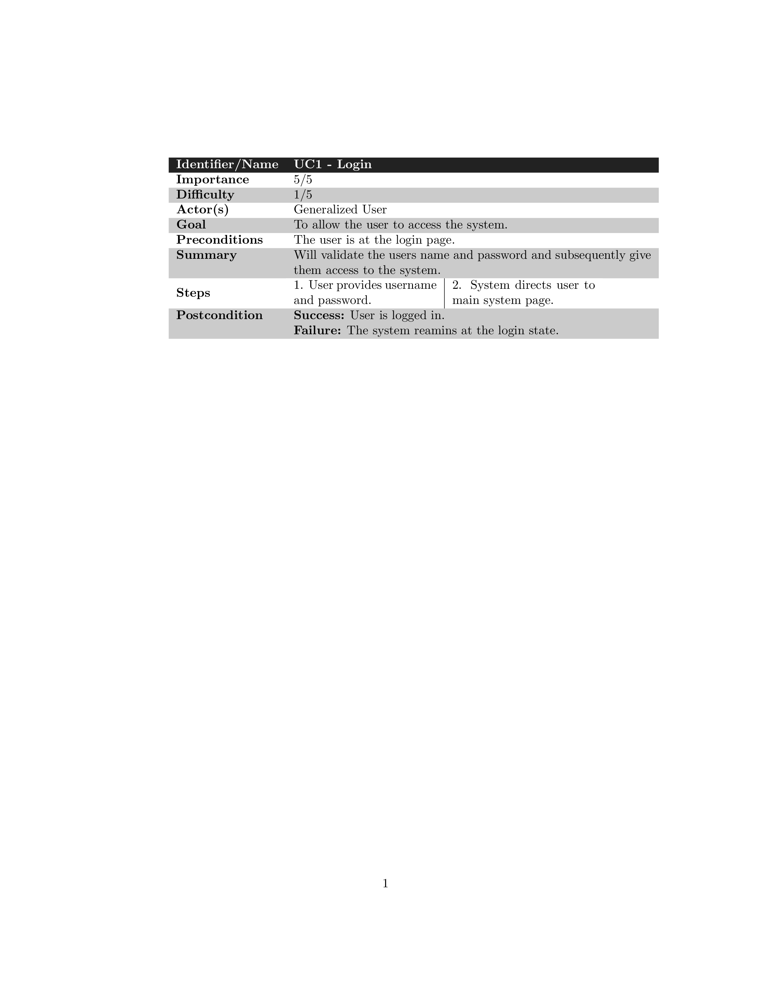

\documentclass{report}
\usepackage[table]{xcolor}
\definecolor{lightblue}{rgb}{0.93,0.95,1.0}
\begin{document}
\rowcolors{1}{lightgray}{white} %% <--- here
\noindent
\begin{tabular}[!ht]{>{\bfseries}l <{\raggedright}p{10cm}}
\rowcolor{black!90}\textcolor{white}{Identifier/Name} & \textcolor{white}{\textbf{UC1 - Login}} \\
Importance & 5/5\\
Difficulty & 1/5\\
Actor(s) & Generalized User\\
Goal & To allow the user to access the system.\\
Preconditions & The user is at the login page. \\
Summary & Will validate the users name and password and subsequently give them access to the
system.\\
Steps &
{\begin{tabular}{@{}p{4cm} | p{4cm}@{}}
1. User provides username and password. & 2. System directs user to main system page. \\
\end{tabular}} \\
Postcondition & \textbf{Success:} User is logged in. \newline \textbf{Failure:} The system reamins at the login state. \\
\end{tabular}
\end{document}Created by David Li